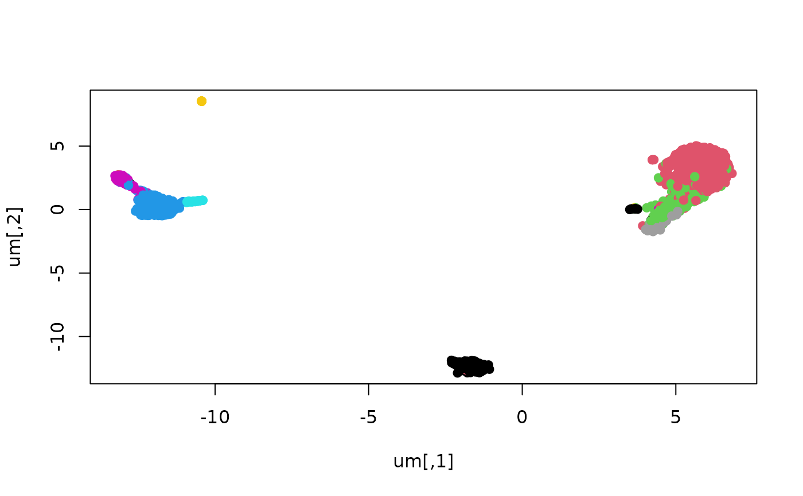

R/graph_acts.R
propagate_label.Rdpropagation -- updates a post-train cell embedding, in which embedding "rows" corresponding to cells have been reordered, adding a column to the `obs` component
propagate_label(simba_ref, origad, label_name)instance of simba module; `retrieve_embedding` python method will be applied to receive elements `C` and `G`. `C` will be the focus; the rows of its `obs` component need to be reordered.
instance of AnnData regarded as possessing the names of entities as a component of obs, in the order in which they were first constructed
character(1) element of `origad$obs` to be reordered and assigned to the embedding component `C`.
p3k = get_10x3kpbmc_path(overwrite=TRUE) # allow repetition
ref = simba_ref()
pp = ref$read_h5ad(p3k)
# bb = basic_preproc(pp, simba_ref=ref)
# gg = build_and_train_pbg( bb, simba_ref=ref )
# labc = propagate_label( ref, pp, "celltype" )
cemb = ref$read_h5ad( get_3k_cell_emb() )
cemb$obs$celltype = pp[cemb$obs_names]$obs[["celltype"]] # what propagate_label does
um = uwot::umap( cemb['X'] )
plot(um, pch=19, col=factor(cemb$obs$celltype) )
